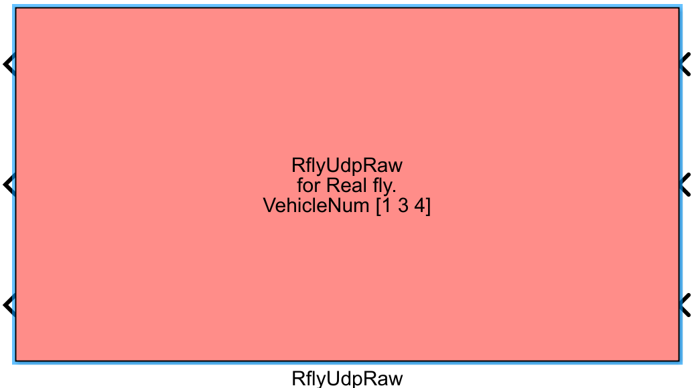

|
RflySimSDK v3.06
RflySimSDK说明文档
|
载入中...
搜索中...
未找到
|
RflySimSDK v3.06
RflySimSDK说明文档
|
| 功能 | 获取并发送MAVLink数据，可以控制多架无人机的模拟飞行或实际飞行。RflyUdpMavlink模块是整个MATLAB控制集群的系统中最为核心的模块，是MATLAB程序连接CopterSim仿真模型和模拟飞控的基础。 |
|---|---|
| 参数 | |
| Vehicle number or CopterID list | 用一个向量表示，本模块一共仿真多少个飞机（向量长度），每个飞机的序号是多少（向量数值）。例如，[1:5] 等于 [1 2 3 4 5] 表示前五个飞机，或者[6:10]，或者[1 3 5 6] |
| Sample Time | 用于设定模块的采样时间。 |
| RealflyMode | 是否启用真机模式，如果勾选，就会使用设定的IP和端口规则。如果不勾选，则默认使用RflySim平台的端口和Ip规则，即IP地址不会变，端口会自+2。 |
| 不勾选RealflyMode | 默认模式IP和端口规则 |
| **Target IP Address**：用于设置需要控制的CopterSim所在电脑的IP地址，默认是“127.0.0.1”。如果需要控制另一台电脑上的CopterSim，可在此处填写目标电脑的IP地址。 | |
| GPS Orin ：[Lat Lon (degree) Alt(m)] for GlobalPos，地图GPS原点设置 | |
| **Udp Mode**：选择通信模式，分为Mavlink_Full、Mavlink_Simple、Mavlink_Real | |
| 勾选RealflyMode | 真机模式IP和端口规则 |
| **Base IP Address**： 需要控制飞机的IP地址，通常情况下要取实际局域网中，飞机对应的IP地址。注意：所有飞机应该提前配置静态IP，确保IP规则保持基准IP自+1的模式。例如，基准IP是191.168.151.101，那么1号飞机是191.168.151.101，而5号飞机是191.168.151.105. | |
| **Base Udp Port**：每个飞机的mavlink通信端口，这个端口号要提前在每个飞机上设定，并约定好是基准端口号自+1的形式。注意：基准端口是15501，则1号飞机需设置成mavlink发送端口15501，而5号端口需设置发送端口15505. | |
| 输入 | 连接一个或多个无人机的控制信号。 |
| 输出 | 模块的输出为一个或多个无人机的状态反馈数据。 |
RflyUdpMavlink模块软件仿真和实飞有所差异。
首先介绍**仿真**情况下的配置。该模块有六个配置项，下面介绍软件在环模式下配置项该如何选择。
（1） CopterSim目标主机IP，在本系列课程中使用127.0.0.1默认配置即可。对于开发者用户，如果CopterSim没有部署在本机，那么可以指定相应主机的IP。
（2） 配置飞机ID号或者数量，在软件在环仿真中飞机总是连续的，所以只需配置飞机的数量即可，有几架飞机就配置几。硬件在环仿真中，出现了硬件损坏使飞机不连续，那么应该写成[1 3 7]这样的以空格分割的从小到大形式。
（3） GPS原点设置，在需要使用全局坐标的场景下，可以通过MATLAB这是GPS坐标原点。即建立起NED坐标系与全局坐标系的虚拟对应关系。在本系列课程中设置为默认值即可。
（4） 设置MAVLINK模式，支持三种模式Mavlink_Real、Mavlink_Full、Mavlink_Simp。不同模式的差异在于数据包的大小不同。本系列课程中统一设置为Mavlink_Real。
（5） 设置发送频率，推荐频率为30Hz，即采样时间间隔需要设置为1/30。通常可以将该模块的频率设置为-1，然后Simulink仿真频率设置为30Hz。当系统中使用不同的频率进行控制时，往往需要对数据进行采样，否则Simulink模型将会报错。
（6） RealflyMode，在软件在环模式下不要勾选。该选项会影响端口的设置。

该模块的输出是28维的向量，需要搭配real_data_decoder进行使用。real_data_decoder的输出也是总线。当从总线中提取数据时，MATLAB会自动提示总线中有哪些数据。real_data_decoder的输出包含无人机的全局位置、局部位置、当前所处模式信息、电量信息等。
下面介绍实飞模式下配置项该如何选择。
（7） 目标飞机IP，配置单个飞机时直接填写飞机在局域网中的IP“192.168.151.1”。档配置多个飞机时，分为两种情况，一种是飞机IP是连续的，另一种是飞机IP不连续。当飞机IP连续时，只需要配置第一架飞机的IP即可。当飞机编号不连续时，使用逗号分割的方式填写不连续IP“192.168.151.1，192.168.151.3”。
（8） 配置飞机ID号或者数量，如果飞机ID是连续的，那么就直接填写飞机的数量；如果飞机不从1号开始编号，需要下一项base端口改为最小的飞机端口。对于单架飞机不从1号开始编号，假设是3号飞机，那么应该写成[3]；单个飞机的另一种配置方式是Base端口设成15503然后端口填写1。如果是多架不连续的飞机，那么应该写成[1 3 7]这样的以空格分割的从小到大形式。
（9） Base端口设置。最小飞机的端口，需配合第二项配置使用，例如15501。
（10） 设置发送频率，推荐频率为30Hz，即采样时间间隔需要设置为1/30。通常可以将该模块的频率设置为-1，然后Simulink仿真频率设置为30Hz。当系统中使用不同的频率进行控制时，往往需要对数据进行采样，否则Simulink模型将会报错。
（11） RealflyMode，实飞模式下要勾选。该选项会影响端口的设置。
该模块的输出是28维的向量，需要搭配real_data_decoder进行使用。real_data_decoder的输出也是总线。当从总线中提取数据时，MATLAB会自动提示总线中有哪些数据。real_data_decoder的输出包含无人机的全局位置、局部位置、当前所处模式信息、电量信息等。使用示例：[安装目录]\RflySimAPIs\10.RflySimSwarm\1.BasicExps\e1_RflyUdpSwarmExp\index.html
{kind=link}
{kind=link}
{kind=link}
{kind=link}
{kind=link}